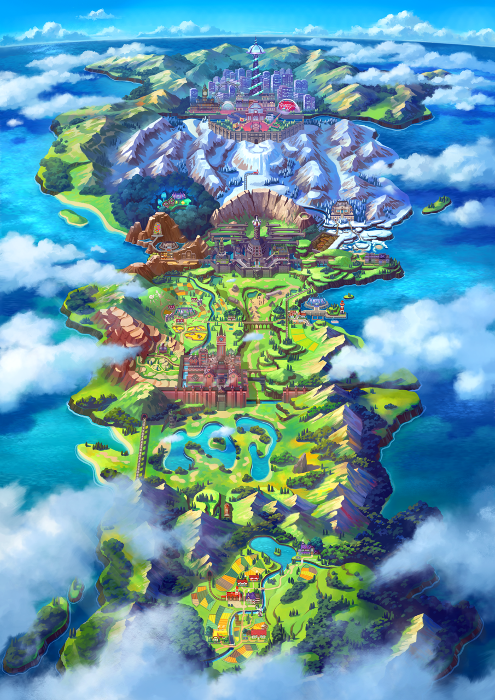

Galar Map
Scorbunny (Japanese: ヒバニー Hibanny) is a Fire-type Pokémon introduced in Generation VIII. It evolves into Raboot starting at level 16, which evolves into Cinderace starting at level 35. Along with Grookey and Sobble, Scorbunny is one of three starter Pokémon of Galar available at the beginning of Pokémon Sword and Shield. Along with Grookey and Sobble, it was the first Generation VIII Pokémon to be revealed to the public on February 27, 2019.
Scorbunny is a rabbit-like Pokémon that has a predominantly white body with orange and yellow markings on its ears, toes, and neck. The markings on its neck resemble a collar. It has buckteeth, an orange nose, and irises, black sclerae, as well as a yellow band shape across its nose, resembling a bandage. It has long legs with long feet and the same yellow band on its nose under each paw pad. It also has a small, white, poof-like tail. Scorbunny loves to run and is filled with energy. A warm-up run can cause the fire energy in Scorbunny to start coursing through its body, allowing it to fight at full power. The special pads on the back of its feet and nose can generate heat once it is ready to fight. The pads on Scorbunny's feet can get so hot that it is capable of using them to burn opponents with a kick and it can start small fires from underneath its feet. The anime has shown that its heat pads can also thaw others out of ice. By using its powerful legs, Scorbunny can run and jump around its opponents to confuse and disorient them. It is a rare Pokémon that is found more often under the ownership of Trainers.[1] According to the anime, the soles on Scorbunny's feet are believed to bring good luck.